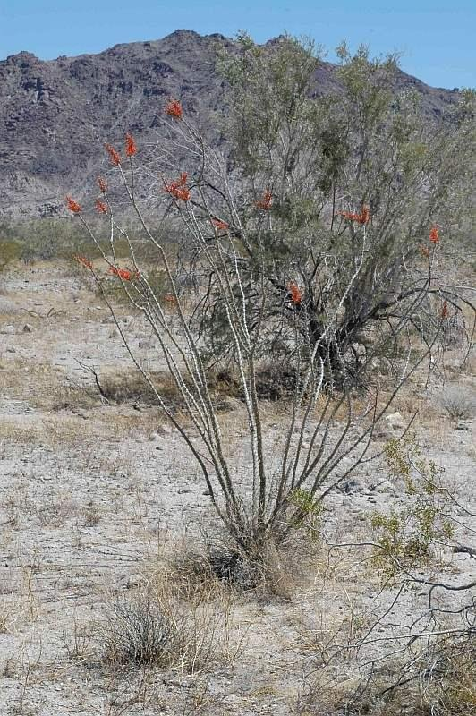
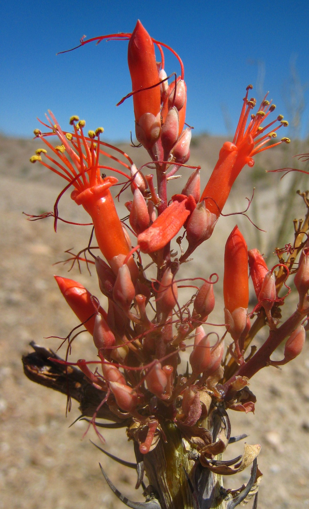
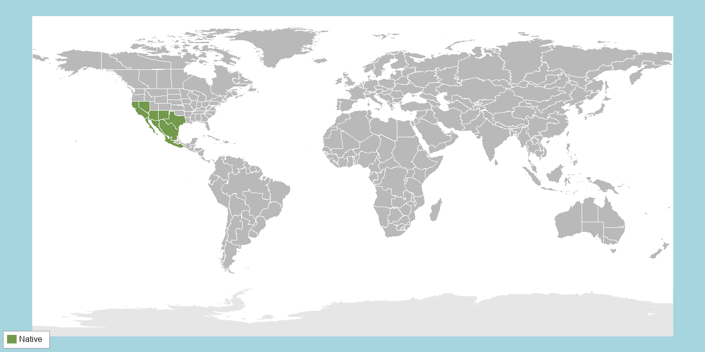

AIdentifying Features
Ocotillo is unmistakable and often mistaken for a cactus, though it isn't one. It grows as a vase-shaped cluster of 3–10 (occasionally many more) unbranched, whip-like woody stems ("canes") radiating upward from a single base, typically reaching 3–10 m tall. Each cane is armed with sharp, stout spines — hardened remnants of leaf stalks — and covered in thin, gray bark.
Its leaves are small, ephemeral, and drought-deciduous: the plant flushes a full set of tiny green leaves within days of rain, then sheds them as the soil dries out again, repeating this cycle up to five or more times in a single growing season. In spring, each cane tip produces a dense, cone-shaped cluster of tubular, bright orange-red flowers, roughly 2–2.5 cm long, that bloom well before most other desert plants. That reliable spring bloom is fueled by water reserves banked in the plant's succulent stems, which buffer flower and fruit production against unpredictable desert rainfall even in dry years (Killingbeck, 2019).

Whole-plant habit, showing the overall vase-shaped form of radiating spiny canes.
Photo: Victor Steinmann, Instituto de Ecología, Mexico, via Neotropikey / POWO. CC BY-NC-SA 3.0 (NonCommercial use only).

Tubular flower cluster at a cane tip — a key identifying feature and hummingbird nectar source.
Photo: Ciar (2008), Wikimedia Commons, Public domain
BHabitat & Range
Ocotillo is native to the Sonoran and Chihuahuan Deserts of southwestern North America, spanning Arizona, California, New Mexico, and Texas in the United States and extending south through much of northern and central Mexico. It also occurs at lower density into parts of the Mojave Desert's margins.
Look for it on rocky slopes, alluvial fans, and well-drained desert scrub, typically below about 1,500 m elevation — it avoids low, poorly drained ground where water can pool. Established plants tolerate extreme heat and long droughts, but seedlings establish only in years with unusually favorable rainfall, so populations skew toward long-lived adults rather than dense stands of young plants (Nobel & Zutta, 2005).

Native range (green); ocotillo has no recorded introduced/naturalized range.
Distribution data: POWO, 2025. Region boundaries: TDWG WGSRPD Level 3 (Brummitt, 2001).
CBiology & Ecology
☀️ Photosynthetic Pathway
Despite living in one of the hottest, driest environments in North America, ocotillo uses ordinary C3 photosynthesis rather than the CAM pathway common among desert succulents like cacti and agaves. When leaves are absent, a layer of chlorophyllous parenchyma tissue just beneath the bark — fully competent chloroplasts confirmed by chlorophyll fluorescence and direct 14CO2 labeling — keeps the stems photosynthesizing at a low rate, so the plant is never fully shut down even in the driest, leafless months (Nedoff et al., 1985). Gas-exchange measurements on young plants confirm this stem-and-leaf C3 strategy tracks the desert's seasonal rain: carbon gain and productivity rise and fall with the temperature and moisture windows of the Sonoran Desert's winter, spring, and summer rains rather than running continuously the way a CAM plant would (Bobich & Huxman, 2009). Because rainfall in this desert is brief but not vanishingly scarce, opportunistic C3 photosynthesis — paired with rapid leaf flushing and drought-deciduous leaf drop rather than the slow, water-tight metabolism of CAM — lets ocotillo capture carbon quickly whenever water is available instead of paying the metabolic cost of CAM's nighttime CO₂ storage year-round.
💧 Resource Acquisition Strategy
Strategy — capturing brief rains on demand. Ocotillo lives on unpredictable desert rainfall by acquiring water opportunistically, timing its whole metabolism to short pulses of soil moisture rather than trying to run continuously through drought.
Structures. Shallow, widely spreading roots absorb water rapidly after even light rain; succulent stems store that water in spongy internal tissue that buffers flowering and fruiting against dry spells (Killingbeck, 2019); and small drought-deciduous leaves can be flushed and shed several times a year. Remarkably, that leaf flush is triggered by surface rain largely independently of deep root activity, so a full canopy of leaves can appear within days of a storm and be dropped again as the soil dries (Killingbeck, 1990).
Ecosystem-scale cycling. This pulse-driven habit makes ocotillo a sensitive valve on desert water and carbon cycling: carbon uptake and transpiration switch on and off with each rain event instead of running year-round (Nobel & Zutta, 2005). When the leaves are shed, they take most of their nitrogen with them, because ocotillo resorbs very little nutrient before dropping a leaf — an "inefficiency" that returns comparatively nitrogen-rich litter to the soil and feeds the desert's slow nutrient cycle (Killingbeck, 1992).
Impact on other species. Those repeated nutrient-rich leaf drops enrich the soil beneath the plant, creating a fertile patch in an otherwise lean desert, while ocotillo's reliable pulses of foliage and its spring flowers supply food for herbivores and nectar for pollinators when little else is productive.
🌸 Reproductive Strategy
Sexual, asexual, or both? In the wild, ocotillo reproduces essentially only sexually, by seed, and it is largely self-incompatible — a plant cannot fertilize itself, so it must receive pollen from another individual to set a full seed crop (Waser, 1979). The only asexual route is human-assisted: cut stems readily take root, which is why ocotillo is often planted as a living fence, but this cloning does not happen on its own in nature.
Pollinators. Yes, and it is showy about it. Its bright red, tubular, nectar-rich flowers attract hummingbirds and large carpenter bees. Hummingbirds are the main pollinators in the Sonoran Desert, while carpenter bees take over across much of the Chihuahuan Desert, where female bees pack their nests with ocotillo pollen (Waser, 1979; Scott et al., 1993). Flowering is timed to the spring northward migration of hummingbirds, but because several pollinators serve it, no single one is exclusive.
Fertilization. A hummingbird or bee probing one plant's flowers for nectar picks up pollen and brushes it onto the stigma of a flower on another plant. Because ocotillo is self-incompatible, only this cross-pollen can grow a pollen tube down the style to fertilize the ovules — making the animal visitors essential to seed production.
Seeds & dispersal. Fertilized flowers ripen into dry capsules packed with small, thin, winged seeds — and output is prolific, with a single plant averaging more than a thousand fruits per year (Killingbeck, 2023). The lightweight papery seeds are shed and carried off mainly by the wind, so no animal is required to disperse them.
🐝 Species Interactions
The interaction — getting its start under a "nurse plant." An adult ocotillo looks tough, but its seedlings are extremely vulnerable to the desert's heat and drought. Ocotillo seeds germinate and survive almost only in the cooler, shadier, moister microhabitat beneath an established "nurse" plant (or a sheltering rock) rather than out in the open sun (Nobel & Zutta, 2005).
How it helps the plant. The nurse plant shades the ground, buffers temperature, and holds a little more moisture, giving the ocotillo seedling the protected microclimate it needs to establish — a form of facilitation that is common, and often essential, for plant recruitment in harsh arid environments (Franco & Nobel, 1989; Flores & Jurado, 2003). Because ocotillo depends on these safe sites to produce its next generation, the interaction is critical to its reproduction and long-term survival, even though mature plants stand on their own.
Impact on the other species (0 / −). Roughly neutral for the nurse plant at first; but as the ocotillo grows it may begin to compete with its former nurse for water and light, so the relationship can shift over time from harmless to mildly negative for the nurse.
References for this Species
APA 7 format. Sources used for text are listed first; image sources follow and do not count toward the per-species source minimum. Full running list, organized by species, also appears on the References page.
- Bobich, E. G., & Huxman, T. E. (2009). Dry mass partitioning and gas exchange for young ocotillos (Fouquieria splendens) in the Sonoran Desert. International Journal of Plant Sciences, 170(3), 283–289. https://doi.org/10.1086/596331 Peer-reviewed
- Killingbeck, K. T. (1990). Leaf production can be decoupled from root activity in the desert shrub ocotillo (Fouquieria splendens Engelm.). American Midland Naturalist, 124(1), 124–129. https://doi.org/10.2307/2426085 Peer-reviewed
- Killingbeck, K. T. (1992). Inefficient nitrogen resorption in a population of ocotillo (Fouquieria splendens), a drought-deciduous desert shrub. The Southwestern Naturalist, 37(1), 35–42. https://doi.org/10.2307/3672144 Peer-reviewed
- Killingbeck, K. T. (2019). Stem succulence controls flower and fruit production but not stem growth in the desert shrub ocotillo (Fouquieria splendens). American Journal of Botany, 106(2), 223–230. https://doi.org/10.1002/ajb2.1237 Peer-reviewed
- Killingbeck, K. T. (2023). Fruit production and estimated seed output in the desert shrub ocotillo (Fouquieria splendens). The Southwestern Naturalist, 67(2), 95–104. https://doi.org/10.1894/0038-4909-67.2.95 Peer-reviewed
- Nedoff, J. A., Ting, I. P., & Lord, E. M. (1985). Structure and function of the green stem tissue in ocotillo (Fouquieria splendens). American Journal of Botany, 72(1), 143–151. https://doi.org/10.1002/j.1537-2197.1985.tb05352.x Peer-reviewed
- Nobel, P. S., & Zutta, B. R. (2005). Morphology, ecophysiology, and seedling establishment for Fouquieria splendens in the northwestern Sonoran Desert. Journal of Arid Environments, 62(2), 251–265. https://doi.org/10.1016/j.jaridenv.2004.11.002 Peer-reviewed
- Scott, P. E., Buchmann, S. L., & O'Rourke, M. K. (1993). Evidence for mutualism between a flower-piercing carpenter bee and ocotillo: Use of pollen and nectar by nesting bees. Ecological Entomology, 18(3), 234–240. https://doi.org/10.1111/j.1365-2311.1993.tb01095.x Peer-reviewed
- Waser, N. M. (1979). Pollinator availability as a determinant of flowering time in ocotillo (Fouquieria splendens). Oecologia, 39(1), 107–121. https://doi.org/10.1007/BF00346001 Peer-reviewed
- Franco, A. C., & Nobel, P. S. (1989). Effect of nurse plants on the microhabitat and growth of cacti. Journal of Ecology, 77(3), 870–886. https://doi.org/10.2307/2260991 Peer-reviewed
- Flores, J., & Jurado, E. (2003). Are nurse-protégé interactions more common among plants from arid environments? Journal of Vegetation Science, 14(6), 911–916. https://doi.org/10.1111/j.1654-1103.2003.tb02225.x Peer-reviewed
- Claude. (2026). Assistance with brainstorming and synthesizing information for Photosynthetic Pathways [Large language model]. Anthropic. https://claude.ai
- Claude. (2026). Assistance with brainstorming and synthesizing information for Resource Acquisition Strategies [Large language model]. Anthropic. https://claude.ai
- Claude. (2026). Assistance with brainstorming and synthesizing information for Reproductive Strategies [Large language model]. Anthropic. https://claude.ai
- Claude. (2026). Assistance with brainstorming and synthesizing information for Species Interactions [Large language model]. Anthropic. https://claude.ai
Image & map sources (not counted toward the per-species source minimum):
- Gilkeson, J. / U.S. Fish and Wildlife Service. (2017). Ocotillo in bloom [Photograph]. Wikimedia Commons. https://commons.wikimedia.org/wiki/File:Ocotillo_in_bloom_(33213849630).jpg. Public domain (U.S. federal government work).
- Ciar. (2008). Ocotillo flowers up close [Photograph]. Wikimedia Commons. https://commons.wikimedia.org/wiki/File:Ocotillo_flowers_up_close.jpg. Public domain.
- Steinmann, V. / Instituto de Ecología, Mexico. (2006). Fouquieria splendens (Fouquieriaceae) - Habit [Photograph]. Neotropikey, via Plants of the World Online. Retrieved July 16, 2026, from https://powo.science.kew.org/taxon/urn:lsid:ipni.org:names:77126593-1/images. CC BY-NC-SA 3.0 (NonCommercial use only).
- POWO. (2025). Fouquieria splendens Engelm. In Plants of the World Online. Royal Botanic Gardens, Kew. Retrieved July 16, 2026, from https://powo.science.kew.org/taxon/urn:lsid:ipni.org:names:105437-2. Distribution data CC BY 3.0.
- Harvey, J. (2008). BlankMap-World-Equirectangular [Map]. Wikimedia Commons. https://commons.wikimedia.org/wiki/File:BlankMap-World-Equirectangular.svg. CC0 (public domain). Used as basemap.